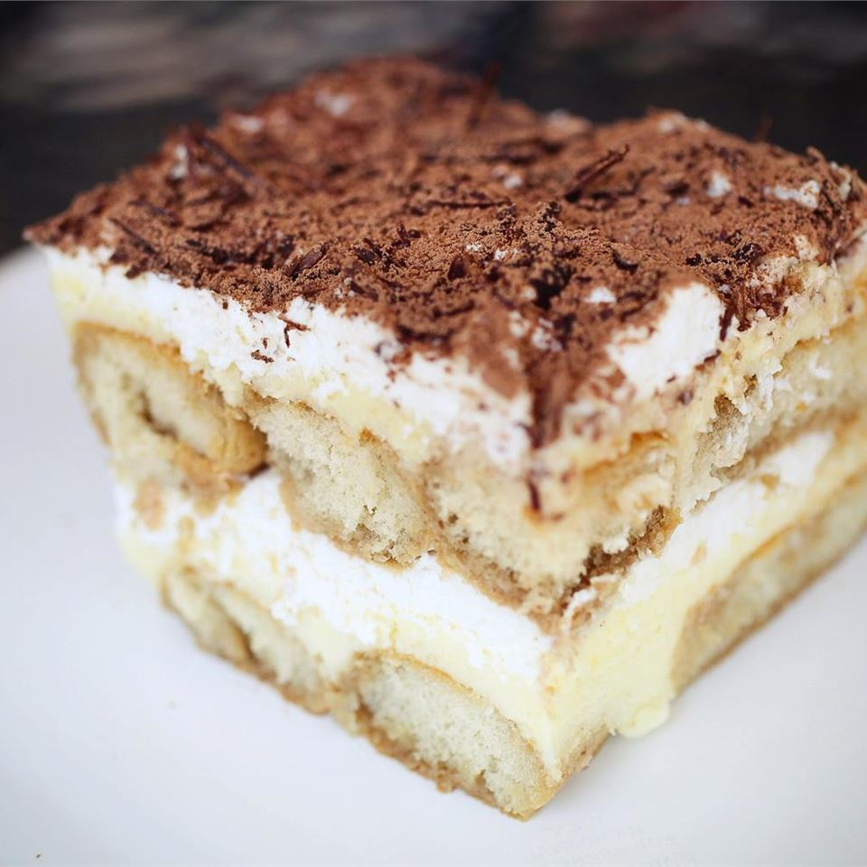

Tiramisu

Decription
Tiramisu (Italian: tiramisù [ˌtiramiˈsu], from tirami su, "pick me up" or "cheer me up") is a coffee-flavoured Italian dessert. It is made of ladyfingers (savoiardi) dipped in coffee, layered with a whipped mixture of eggs, sugar, and mascarpone cheese, flavoured with cocoa.
Ingredients
- 1 1/2 cups heavy whipping cream
- 8 ounce container mascarpone cheese ,room temperature
- 1/3 cup granulated sugar
- 1 teaspoon vanilla extract
- 1 1/2 cups cold espresso
- 3 Tablespoons coffee flavored liqueur ,optional (Kahlua or DaVinci brands)
- 1 package Lady Fingers ,Savoiardi brand can be found in the cookie aisle at your local grocery store, or online
- Cocoa powder for dusting the top
Steps
-
Put the double cream, mascarpone, marsala and golden caster sugar in a large bowl.
-
Whisk until the cream and mascarpone have completely combined and have the consistency of thickly whipped cream.
-
Pour the coffee into a shallow dish. Dip in a few of the sponge fingers at a time, turning for a few seconds until they are nicely soaked, but not soggy. Layer these in a dish until you’ve used half the sponge fingers, then spread over half of the creamy mixture.
-
Using the coarse side of the grater, grate over most of the dark chocolate. Then repeat the layers (you should use up all the coffee), finishing with the creamy layer.
-
Cover and chill for a few hours or overnight. Will keep in the fridge for up to two days.
-
To serve, dust with the cocoa powder and grate over the remainder of the chocolate.